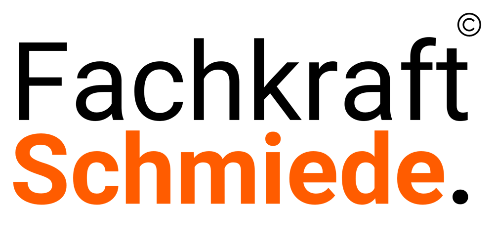
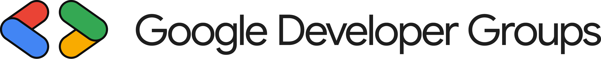

Agentario
Unsere Hauptplattform verbindet Menschen, KI-Agenten und Geschäftssysteme. Für zusammenhängende Arbeit im Kundenkontakt, in Operations und in der Administration.
Agentario kennenlernenUnser Ziel ist, repetitive Arbeit aus dem Alltag von Unternehmen zu nehmen. Mit Automatisierungen, verbundenen Workflows und KI-Agenten.
Gemeinsam entwickeln wir Software, die wiederkehrende Arbeit übernimmt. Unser Ausgangspunkt: die Abläufe der Menschen, die täglich damit arbeiten.
Unser Hauptprodukt Agentario verbindet Voice, Desktop-Automatisierung und Workflows in einer Plattform. Daneben entwickeln wir eigene Werkzeuge und setzen Automatisierungen für Unternehmen um. Ausgangspunkt ist die Arbeit, die heute jemand manuell erledigt: Anfragen zuordnen, Daten übertragen, Informationen zusammentragen oder den nächsten Schritt anstoßen.
Wir wollen verstehen, was dabei immer gleich ist, welche Ausnahmen auftreten und wo die Entscheidung bei einem Menschen bleiben muss. Daraus bauen wir einen Ablauf, der zu Ihrem Unternehmen passt.
With Agentario we run the most natural inbound and outbound calls I've ever heard from an AI — including sales calls. As a pre-release partner I was honestly baffled: our team's throughput jumped over 5× overnight, and people with zero engineering background were building agents that other companies need dedicated AI engineers for.
Trusted by people from



Unsere Hauptplattform verbindet Menschen, KI-Agenten und Geschäftssysteme. Für zusammenhängende Arbeit im Kundenkontakt, in Operations und in der Administration.
Agentario kennenlernenArbeitsschritte erfassen und Vorschläge für Automatisierungen entwickeln.
Mehr über AnyUseEin gemeinsamer Arbeitsplatz für KI-gestützte Softwareentwicklung.
Mehr über IVEFachsoftware zum Prüfen und Weiterplanen von Kreuzungen.
Mehr über VerkehrsOSAIFOREU wird von transformIT europe und privaten Angel-Investoren unterstützt. Bei transformIT europe sind unsere Agenten bereits im Einsatz.
Unser Forschungsvorhaben AI4EU-Traffic wird von der Europäischen Union und dem Land Niedersachsen kofinanziert.